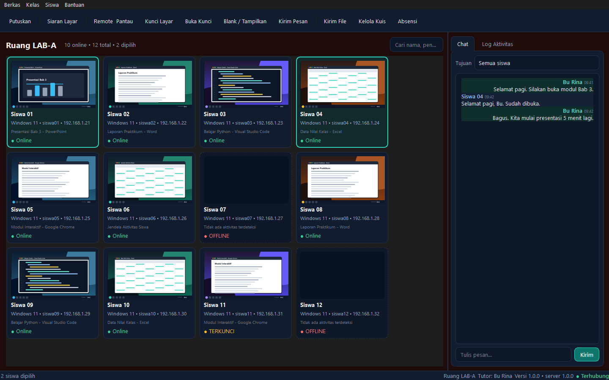

Pemantauan langsung
Thumbnail layar setiap siswa diperbarui berkala. Cari berdasarkan nama, pengguna, atau IP, lalu pilih satu atau banyak siswa.
Pantau layar siswa, kendalikan komputer, siarkan materi, kirim file, jalankan kuis, dan catat absensi — semuanya dari satu konsol guru. Dibuat dari awal untuk Windows dan Linux.

192.168.1.10:47800
Ini hanya contoh. Ganti dengan IP komputer server di lab Anda. Alamat server hanya dapat diakses dari jaringan lab yang dikelola; jangan membuka port server ke internet.
Cara menyambungkan →Dirancang untuk guru, bukan administrator jaringan. Semua koneksi melewati server lab, dan kunci jawaban kuis tetap di server.
Thumbnail layar setiap siswa diperbarui berkala. Cari berdasarkan nama, pengguna, atau IP, lalu pilih satu atau banyak siswa.
Lihat layar penuh, kendalikan mouse dan keyboard, pilih monitor, atur FPS/kualitas, ambil snapshot, atau rekam sesi.
Tampilkan layar guru sebagai overlay penuh di semua siswa atau hanya yang dipilih, dengan pengaturan monitor, FPS, dan kualitas.
Chat dengan seluruh kelas atau satu siswa. Kirim file dua arah; siswa juga dapat mengirim tugas ke komputer guru.
Buat kuis pilihan ganda, mulai dari konsol, pantau jawaban masuk, dan lihat skor otomatis. Absensi harian dapat diekspor ke CSV.
Autentikasi HMAC-SHA256, password tidak dikirim mentah, TLS opsional, audit SQLite, serta pembaruan terpusat dengan verifikasi SHA-256.
Tangkapan layar berikut memakai data demo sintetis. Tidak ada data siswa asli yang ditampilkan.
Klik gambar untuk memperbesar. Tampilan dapat berbeda sedikit tergantung versi Windows dan tema.
Pilih peran komputer. Installer Windows paling mudah; paket portable tidak memerlukan instalasi. Server Linux dipasang dari source dengan skrip systemd.
Berjalan di setiap komputer siswa sebagai ikon tray. Menyambung ke server, mengirim thumbnail, dan menerima perintah guru.
NetDQM-Agent-windows-x64-setup.exe · ±52 MB
Autostart dapat diaktifkan saat instalasi atau dari jendela Pengaturan agent.
Aplikasi guru untuk memantau, mengendalikan, mengajar, dan menilai. Satu konsol terhubung ke satu ruangan.
NetDQM-Console-windows-x64-setup.exe · ±52 MB
Membutuhkan alamat server, port, password, dan nama ruangan yang sama dengan agent.
Pusat koneksi, database SQLite, kuis, absensi, dan distribusi pembaruan. Satu server dapat melayani banyak ruangan.
NetDQM-Server-linux-x64.tar.gz · ±0,2 MB
Paket Linux berisi skrip pemasang systemd. Server Windows bersifat opsional untuk uji coba atau lab kecil.
Windows SmartScreen dapat menampilkan peringatan saat file pertama kali dibuka. Klik More info lalu Run anyway hanya jika file berasal dari rilis resmi NetDQM. Bandingkan checksum dengan SHA256SUMS.txt bila ragu.
certutil -hashfile NetDQM-Agent-windows-x64-setup.exe SHA256Siapkan server di satu komputer, pasang konsol di komputer guru, lalu pasang agent di setiap komputer siswa. Semua harus berada di jaringan lab yang sama.
Di Linux, ekstrak paket lalu jalankan pemasang. Pemasang membuat pengguna sistem, virtual environment, konfigurasi, dan layanan systemd.
tar -xzf NetDQM-Server-linux-x64.tar.gz
cd NetDQM-Server-*
sudo ./install-server.shDi Windows: jalankan installer server, lalu buka NetDQM Server dari Start Menu. Installer menambahkan aturan firewall TCP 47800.
sudo -u netdqm /opt/netdqm-server/app/.venv/bin/python -m netdqm.server \
--config /etc/netdqm/server.json add-room LAB-A --name "Lab A"Pasang konsol, buka aplikasi, lalu isi alamat server, port, password, nama tutor, dan ruangan.
Alamat server : 192.168.1.10
Port : 47800
Ruangan : LAB-AKlik Hubungkan. Kartu siswa akan muncul saat agent terhubung.
Pasang agent di setiap komputer siswa. Buka ikon NetDQM di tray, pilih Pengaturan, dan isi alamat yang sama.
Alamat server : 192.168.1.10
Port : 47800
Ruangan : LAB-AAktifkan Jalankan otomatis saat login agar agent langsung menyambung setiap komputer dinyalakan.
Uji dulu di satu lab. Pastikan server memakai IP statis atau DHCP reservation sebelum rollout ke semua ruangan. Port default adalah TCP 47800.
NetDQM tidak memiliki backdoor, telemetry, atau koneksi ke server pihak ketiga. Kendali tetap berada di operator lab.
Password tidak dikirim mentah. Server dan client membuktikan identitas dengan HMAC-SHA256; TLS tersedia untuk jaringan yang tidak tepercaya.
Agent hanya menerima pertanyaan dan pilihan. Penilaian dilakukan di server, sehingga jawaban benar tidak dapat dibaca siswa dari aplikasi.
Tidak ada data yang dikirim ke pihak ketiga. Database, log, rekaman, dan konfigurasi disimpan di komputer server serta client Anda.
Jalankan server di jaringan kelas yang dikelola, batasi port 47800 dengan firewall, dan jangan mengekspos server ke internet.